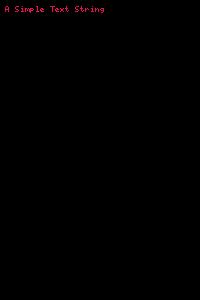

Test Page
The js looks at each img object in the DOM and if it returns an error, replaces it with red_dress_dog.jpg.
This just calls an image that exists - imagetest.jpg - it's hidden at first. But if the next image fails, this one will show.

This is pointing at "http://www.barclayadunn.com/images/blahblah.jpg", but since that image doesn't exist, the js replaces it with red_dress_dog.jpg.

This is pointing at "http://images.pronto.com/thumb2.php?src=http%3A%2F%2Fimages.pronto.com%2Fimages%2Fproduction%2Fproducts%2Fmicrohomepg%2Fslide-image-12.jpg&wmax=373&hmax=192&quality=80&bgcol=FFFFFF&steal=true", but since that image doesn't exist, the js replaces it with red_dress_dog.jpg.

This doesn't work because it's pointing at "./images/blahblah.jpg". That location doesn't exist, but the js only evaluates from a server, not a relative path.